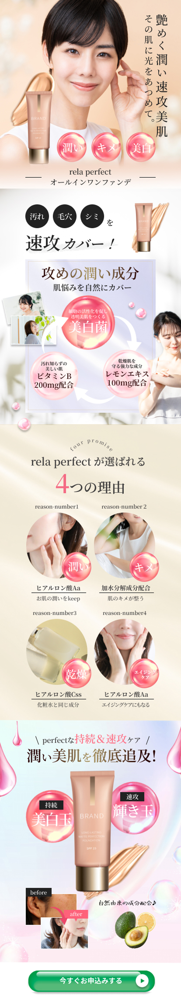

← Back to main page

化粧品
ターゲット
忙しい毎日の中で、メイクのカバー力とスキンケアを一度に済ませたい時短志向の女性。毛穴やくすみ、色ムラといった肌悩みを自然にカバーしつつ、ファンデーションそのものに美容効果まで求める、実利と美容の両立を望む層。「何本もアイテムを使い分けるのは面倒」「隠すだけでなく肌そのものを育てたい」という欲張りなニーズに応えることを狙っている。
デザイン上の工夫
「艶めく潤い速攻美肌 その肌に光をあつめて」という詩的なキャッチコピーと、光を集めたようにツヤめく肌の写真を組み合わせ、使用後の理想的な仕上がりを冒頭で強く印象づけている。「速攻カバー！」「攻めの潤い成分」といった力強い言葉で即効性とパワフルさを打ち出し、ビタミンC200mg・レモンエキス100mgなど、主要成分を具体的な配合量とともに明記することで、単なるイメージにとどまらない説得力を持たせている。中盤の「rela perfectが選ばれる4つの理由」では、ヒアルロン酸や加水分解コラーゲンといった成分・効果を項目ごとにアイコンとビフォーアフター風の画像で図解し、選ばれる根拠を視覚的に整理して納得感を高めている。全体はピンクを基調にした華やかで上品なトーンでまとめ、美容意識の高い女性層の感性に訴求。最後は緑の「今すぐ申込みする」ボタンで視線と行動を一点に集約し、高まった購買意欲をそのまま申し込みへとつなげる導線を作っている。